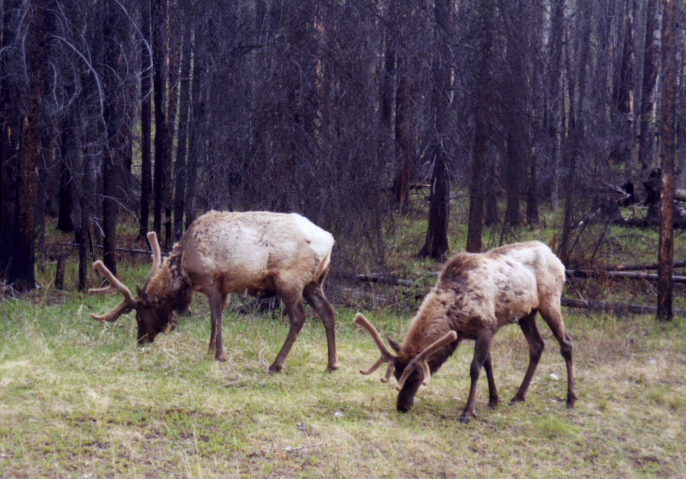

Banff National Park spans three ecoregions, including montane, subalpine, and alpine. The subalpine ecoregion, which consists mainly of dense forest, comprises 53 percent of Banff's area. 27 percent of the park is located above the tree line, in the alpine ecoregion.[59] The tree line in Banff lies approximately at 2,300 m (7,500 ft),[42] with open meadows at alpine regions and some areas covered by glaciers. A small portion (3 percent) of the park, located at lower elevations, is in the montane ecoregion.[59] Lodgepole pine forests dominate the montane region of Banff, with Engelmann spruce, willow, aspen, occasional Douglas-fir and a few Douglas maple interspersed. Engelmann spruce are more common in the subalpine regions of Banff, with some areas of lodgepole pine, and subalpine fir.[60] The montane areas in the Bow Valley, which tend to be the preferred habitat for wildlife, have been subjected to significant human development over the years.[25]

The park has 56 recorded mammal species. Grizzly and black bear inhabit the forested regions. Cougar, Canada lynx, wolverine, red fox, weasel, river otter, coyote, and timber wolf are the primary predatory mammals. Elk, mule deer, and white-tailed deer are common in the valleys of the park, including around (and sometimes in) the Banff townsite, while moose tend to be more elusive, sticking primarily to wetland areas and near streams. In the alpine regions, mountain goat, bighorn sheep, marmot and pika are widespread. Other mammals such as beaver, porcupine, squirrel, chipmunk, snowshoe hare, and Columbian ground squirrel are the more commonly observed smaller mammals.[61] Caribou were the rarest large mammals in the park, but an avalanche in 2009 may have killed the last five remaining within park boundaries.[62]
Due to the harsh winters, the park has few reptile and amphibian species with only one species of toad, three species of frog, one salamander species and two species of snakes that have been identified.[61] At least 280 species of birds can be found in Banff including bald and golden eagles, red-tailed hawk, osprey, and merlin, all of which are predatory species. Additionally, commonly seen species such as the gray jay, American three-toed woodpecker, mountain bluebird, Clark's nutcracker, mountain chickadee and pipit are frequently found in the lower elevations. The white-tailed ptarmigan is a ground bird that is often seen in the alpine zones. Rivers and lakes are frequented by over a hundred different species including loon, heron and mallard which spend their summers in the park.[61]
Mountain pine beetles have caused a number of large-scale infestations in Banff National Park, feeding on the phloem of mature lodgepole pines. Alberta's first known outbreak occurred in 1940, infecting 43 km2 (17 sq mi) of forest in Banff.[65] A second major outbreak occurred in the late 1970s and early 1980s in Banff and the surrounding Rocky Mountains region.